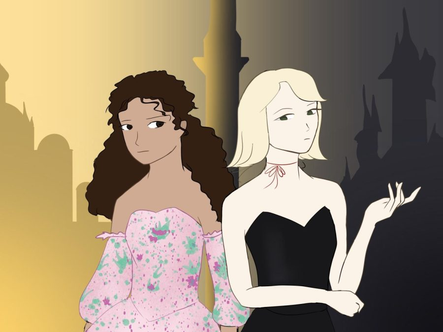

The Last Ever After (2015)
The book still follows Agatha and Sophie in ther adventures in the school for good and evil, but they are challenged by their prejudice and pride.

Why do I love this book? Because:
I loved how the book depicted that strained relationships can't immidiately be mended with a simgle apology or an expression of guilt and regret. Just like how we must all maintain our important relationships, to rekindle a marred one, we must slowly earn back their trust and maybe even love.
I also appreciated that the book addressed that most relationships are not always rainbow and rain. Love may have been the primary string that connects people, it is the devotion, commitment, and respect that fuel and maintain the relationship and deepen the commonly misleading physical attraction.
Lastly, as endearing the friendship between Sophie and Agatha must look like, I actually took their dynamic as a great example of a toxic and manipulative relationship. But Sophie,, even though gradually, learned from her mistakes at the end, so that's what all that matters.
Go Back